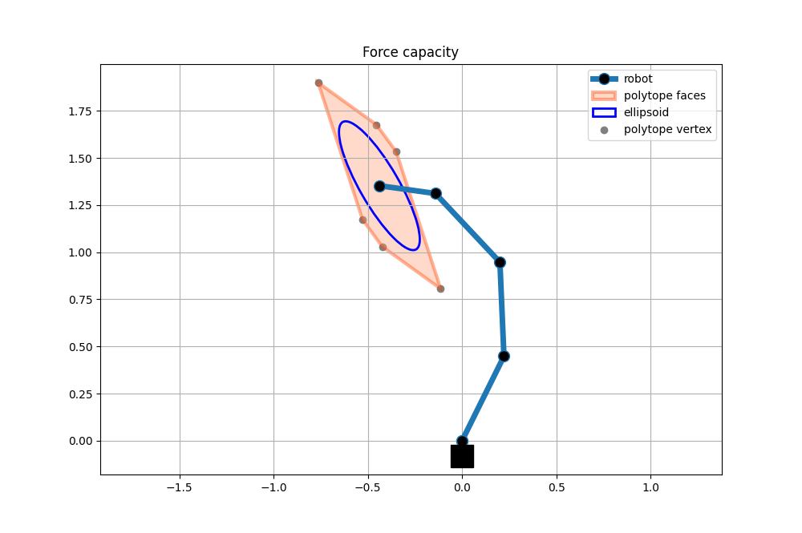
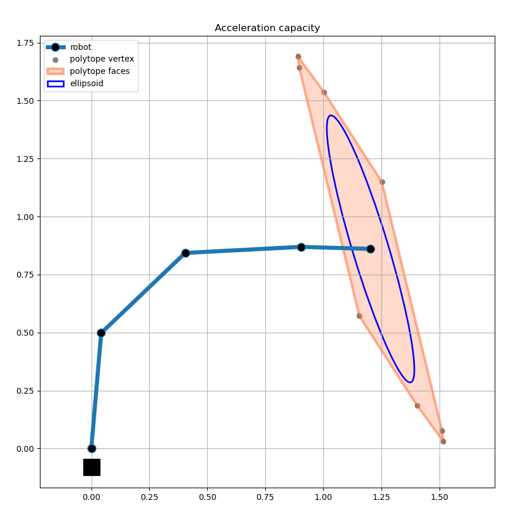
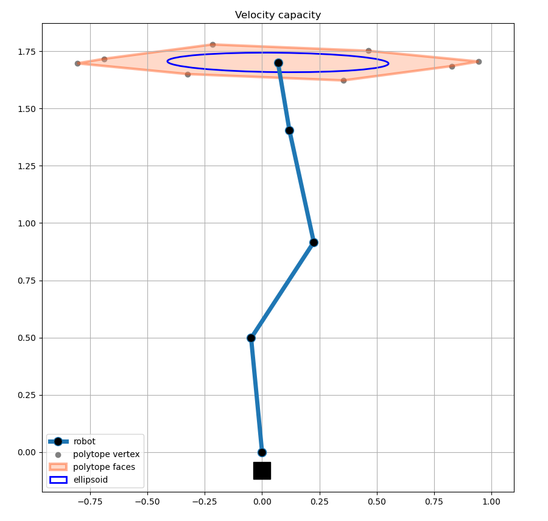

Four link planar robot examples
Four link planar robot is one very common simplified robot model for different analysis and algorithm development. It is composed of 4 links and 4 joints.
To run the following examples copy these functions in a file four_link_utils.py.
"""
Four link planar robot example
- Direct kinematics and jacobian matrix calacualiton for the simple 4 dof plananr robot
- n=4 and m=2
"""
import numpy as np
# jacobian function for four link planar robot
def four_link_jacobian(joints):
sq1 = np.sin(joints[0])
sq12 = np.sin(joints[0] + joints[1])
sq123 = np.sin(joints[0] + joints[1] + joints[2])
sq1234 = np.sin(joints[0] + joints[1] + joints[2] + joints[3])
cq1 = np.cos(joints[0])
cq12 = np.cos(joints[0] + joints[1])
cq123 = np.cos(joints[0] + joints[1] + joints[2])
cq1234 = np.cos(joints[0] + joints[1] + joints[2] + joints[3])
return np.array([[0.5*cq1+0.5*cq12+0.5*cq123+0.3*cq1234, 0.5*cq12+0.5*cq123+0.3*cq1234, 0.5*cq123+0.7*cq1234, +0.3*cq1234], [-0.5*sq1-0.5*sq12-0.5*sq123-0.3*sq1234, -0.5*sq12-0.5*sq123-0.3*sq1234, -0.5*sq123-0.3*sq1234, -0.3*sq1234]])
# inertia matrix of a four link planar robot
def four_link_inertia(joints):
sq1 = np.sin(joints[1])
cq1 = np.cos(joints[1])
sq2 = np.sin(joints[2])
cq2 = np.cos(joints[2])
sq3 = np.sin(joints[3])
cq3 = np.cos(joints[3])
return np.reshape([cq1*(5.0/8.0)+cq2*(3.0/8.0)+cq3/8.0+cq1*cq2*(3.0/8.0)+(cq2*cq3)/8.0-sq1*sq2*(3.0/8.0)-(sq2*sq3)/8.0+(cq1*cq2*cq3)/8.0-(cq1*sq2*sq3)/8.0-(cq2*sq1*sq3)/8.0-(cq3*sq1*sq2)/8.0+7.0/8.0,cq1*(5.0/1.6e+1)+cq2*(3.0/8.0)+cq3/8.0+cq1*cq2*(3.0/1.6e+1)+(cq2*cq3)/8.0-sq1*sq2*(3.0/1.6e+1)-(sq2*sq3)/8.0+(cq1*cq2*cq3)/1.6e+1-(cq1*sq2*sq3)/1.6e+1-(cq2*sq1*sq3)/1.6e+1-(cq3*sq1*sq2)/1.6e+1+1.5e+1/3.2e+1,cq2*(3.0/1.6e+1)+cq3/8.0+cq1*cq2*(3.0/1.6e+1)+(cq2*cq3)/1.6e+1-sq1*sq2*(3.0/1.6e+1)-(sq2*sq3)/1.6e+1+(cq1*cq2*cq3)/1.6e+1-(cq1*sq2*sq3)/1.6e+1-(cq2*sq1*sq3)/1.6e+1-(cq3*sq1*sq2)/1.6e+1+3.0/1.6e+1,cq3/1.6e+1+(cq2*cq3)/1.6e+1-(sq2*sq3)/1.6e+1+(cq1*cq2*cq3)/1.6e+1-(cq1*sq2*sq3)/1.6e+1-(cq2*sq1*sq3)/1.6e+1-(cq3*sq1*sq2)/1.6e+1+1.0/3.2e+1,cq1*(5.0/1.6e+1)+cq2*(3.0/8.0)+cq3/8.0+cq1*cq2*(3.0/1.6e+1)+(cq2*cq3)/8.0-sq1*sq2*(3.0/1.6e+1)-(sq2*sq3)/8.0+(cq1*cq2*cq3)/1.6e+1-(cq1*sq2*sq3)/1.6e+1-(cq2*sq1*sq3)/1.6e+1-(cq3*sq1*sq2)/1.6e+1+1.5e+1/3.2e+1,cq2*(3.0/8.0)+cq3/8.0+(cq2*cq3)/8.0-(sq2*sq3)/8.0+1.5e+1/3.2e+1,cq2*(3.0/1.6e+1)+cq3/8.0+(cq2*cq3)/1.6e+1-(sq2*sq3)/1.6e+1+3.0/1.6e+1,cq3/1.6e+1+(cq2*cq3)/1.6e+1-(sq2*sq3)/1.6e+1+1.0/3.2e+1,cq2*(3.0/1.6e+1)+cq3/8.0+cq1*cq2*(3.0/1.6e+1)+(cq2*cq3)/1.6e+1-sq1*sq2*(3.0/1.6e+1)-(sq2*sq3)/1.6e+1+(cq1*cq2*cq3)/1.6e+1-(cq1*sq2*sq3)/1.6e+1-(cq2*sq1*sq3)/1.6e+1-(cq3*sq1*sq2)/1.6e+1+3.0/1.6e+1,cq2*(3.0/1.6e+1)+cq3/8.0+(cq2*cq3)/1.6e+1-(sq2*sq3)/1.6e+1+3.0/1.6e+1,cq3/8.0+3.0/1.6e+1,cq3/1.6e+1+1.0/3.2e+1,cq3/1.6e+1+(cq2*cq3)/1.6e+1-(sq2*sq3)/1.6e+1+(cq1*cq2*cq3)/1.6e+1-(cq1*sq2*sq3)/1.6e+1-(cq2*sq1*sq3)/1.6e+1-(cq3*sq1*sq2)/1.6e+1+1.0/3.2e+1,cq3/1.6e+1+(cq2*cq3)/1.6e+1-(sq2*sq3)/1.6e+1+1.0/3.2e+1,cq3/1.6e+1+1.0/3.2e+1,1.0/3.2e+1],[4,4]);
def four_link_forward_kinematics(joints):
return four_link_joints_forward_kinematics(joints)[:,-1]
def four_link_joints_forward_kinematics(joints):
L = [0, 0.5,0.5,0.5,0.3]
x = np.zeros((2,1))
for i in range(5):
sq = np.sum(joints[:i])
x = np.hstack((x, x[:,-1].reshape(2,1)+ L[i]*np.array([[np.sin(sq)], [np.cos(sq)]])));
return x
def plot_robot(plt, q):
robot_position = four_link_joints_forward_kinematics(q)
plt.plot(robot_position[0,:],robot_position[1,:], linewidth=5, label="robot", marker='o', markerfacecolor='k', markersize=10)
plt.plot(robot_position[0,0],robot_position[1,0]-0.08,'ks',markersize=20)
Once you’ve done so you can run the following examples and calculate different capacity metrics for you 4dof planar robot.
Force capacity polytope
Force polytope and ellipsoid for 4dof planar robot with random joint angles. The robot, polytope and ellipsoid are visualised using matplotlib.
import numpy as np
import matplotlib.pyplot as plt
from pycapacity.robot import * # robot capacity module
from pycapacity.visual import * # visualistion tools
from four_link_utils import *
# joint positions q
q = np.random.rand(4)*np.pi/3*2-1
# joint torque limits tau
tau_min = -np.ones((4,1))
tau_max = np.ones((4,1))
# jacobian
J = four_link_jacobian(q)
# calculate the force polytope
f_poly = force_polytope(J,tau_min,tau_max)
# calculate the force ellipsoid
f_ellipsoid = force_ellipsoid(J, tau_max)
# visualise polytope ellispoid
fig = plt.figure(12, figsize=[10,10])
scale = 1/5
#plot the robot
robot_position = four_link_forward_kinematics(q)
plot_robot(plt, q)
#plot the polytope
plot_polytope(plot=plt,
polytope=f_poly,
center=robot_position,
face_color='lightsalmon',
edge_color='orangered',
vertex_color='gray',
label='polytope',
scale=scale)
# plot ellispoid
plot_ellipsoid(ellipsoid=f_ellipsoid,
center=robot_position,
plot=plt,
label='ellipsoid',
edge_color='blue',
alpha=1.0,
scale=scale)
plt.title('Force capacity')
plt.grid()
plt.axis('equal')
plt.legend()
plt.show()

Acceleration capacity polytope
Acceleration polytope and ellipsoid for 4dof planar robot with random joint angles. The robot, polytope and ellipsoid are visualised using matplotlib.
import numpy as np
import matplotlib.pyplot as plt
import pycapacity.robot as capacity # robot capacity module
import pycapacity.visual as visual # visualistion tools
from four_link_utils import four_link_inertia, four_link_jacobian, four_link_robot_plot
#joint positions q
q = np.random.rand(4)*np.pi/2
# joint torque limits tau
tau_min = -np.ones((4,1))
tau_max = np.ones((4,1))
# jacobian
J = four_link_jacobian(q)
# jacobian
M = four_link_inertia(q)
# calculate the velocity polytope
a_poly = acceleration_polytope(J, M, tau_min ,tau_max)
# calculate the velocity ellipsoid
a_ellipsoid = acceleration_ellipsoid(J, M, tau_max)
# visualise polytope ellispoid
fig = plt.figure(13, figsize=[10,10])
scale = 1/50
#plot the robot
robot_position = four_link_forward_kinematics(q)
plot_robot(plt, q)
#plot the polytope
plot_polytope(plot=plt,
polytope=a_poly,
center=robot_position,
face_color='lightsalmon',
edge_color='orangered',
vertex_color='gray',
label='polytope',
scale=scale)
# plot ellispoid
plot_ellipsoid(ellipsoid=a_ellipsoid,
center=robot_position,
plot=plt,
label='ellipsoid',
edge_color='blue',
alpha=1.0,
scale=scale)
plt.title("Acceleration capacity")
plt.grid()
plt.axis('equal')
plt.legend()
plt.show()

Velocity capacity polytope
Velocity polytope and ellipsoid for 4dof planar robot with random joint angles. The robot, polytope and ellipsoid are visualised using matplotlib.
import numpy as np
import matplotlib.pyplot as plt
import pycapacity.robot as capacity # robot capacity module
import pycapacity.visual as visual # visualistion tools
from four_link_utils import four_link_jacobian, four_link_robot_plot
#joint positions q
q = np.random.rand(4)*np.pi/3*2-1
# joint torque limits tau
dq_min = -np.ones((4,1))
dq_max = np.ones((4,1))
# jacobian
J = four_link_jacobian(q)
# calculate the velocity polytope
v_poly = velocity_polytope(J, dq_min ,dq_max)
# calculate the velocity ellipsoid
v_ellipsoid = velocity_ellipsoid(J, dq_max)
# visualise polytope ellispoid
fig = plt.figure(14, figsize=[10,10])
scale = 1/5
#plot the robot
robot_position = four_link_forward_kinematics(q)
plot_robot(plt, q)
#plot the polytope
plot_polytope(plot=plt,
polytope=v_poly,
center=robot_position,
face_color='lightsalmon',
edge_color='orangered',
vertex_color='gray',
label='polytope',
scale=scale)
# plot ellispoid
plot_ellipsoid(ellipsoid=v_ellipsoid,
center=robot_position,
plot=plt,
label='ellipsoid',
edge_color='blue',
alpha=1.0,
scale=scale)
plt.title("Velocity capacity")
plt.grid()
plt.axis('equal')
plt.legend()
plt.show()
